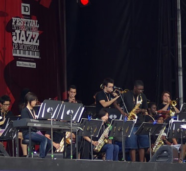
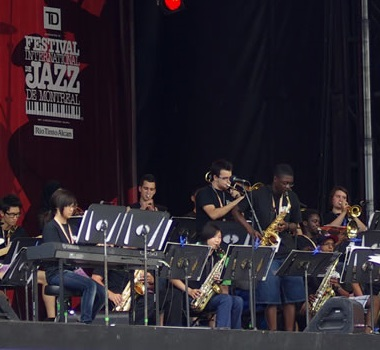

Music
Music is a class that can be taken in the fine arts. Students have the option to learn one of the following instruments: saxophone, trumpet, trombone, electric bass, drums and percussion. Students who have piano or guitar experience will be able to develop their knowledge of the instrument even more. All music students have the choice of joining the school band as an extra-curricular activity